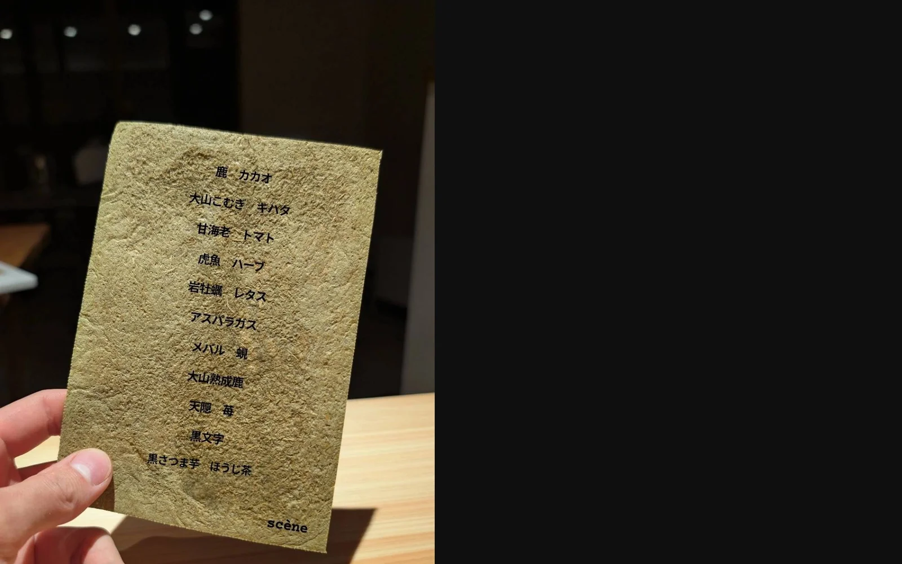

Scène
料理のために用意された、
静かな一夜。
料理と静けさのために
用意された、ひとつの場面。
Scène（セヌ）は、フランス語で「情景」を意味します。
その日の天気、気温、空気の匂い。
畑と海から届く、その日だけの食材。
それらすべてを「一皿の情景」として表現すること。
街の喧騒から離れた大山の麓で、
ただ料理と向き合うための時間をご用意しました。
Scèneという名前
毎日畑で野菜やハーブを収穫するため、日によって野菜の種類も変わります。海の恵みも、天候によっては漁に出られず、日々ラインナップが変わる。そういった山陰の情景を料理から感じ取っていただけるようなコースをご提供しています。


山陰の恵みを、
フレンチという手法で。
使う食材は、その時々の山陰のもの。
野菜、魚、肉。季節と向き合いながら、その日のコースを組み立てます。
同じ日がない土地の"情景（scène）"を、コースとして皿の上に立ち上げます。
※料理を手がけるのは鳥取県出身の料理人、前田帆貴。東京ではビストロの厨房に立ち、料理長として日々の営業に携わる一方、ミシュラン星を獲得するレストランではアシスタントとして現場を支え、基礎的な技法や仕事への向き合い方を学んできました。自身の料理はまだ道半ばと考え、土地の食材や素材そのものに向き合いながら、より良い一皿を目指して研鑽を続けています。
※レストランはコース料理のみのご提供となります。
余白を楽しむ、
静寂の空間。
Scèneの客室は、食事の余韻と大山の静けさに浸るための場所です。
過度な装飾や設備は設けず、
窓から切り取られる森の景色と、深呼吸できる余白をご用意しました。
ただ、心穏やかに眠るためだけの空間です。
- Wi-Fi完備
- シャワーブース / タオル / ドライヤー / オリジナルパジャマ
- ※施設内にある陶器風呂の貸切バスルームもご利用いただけます。

子どもは宿泊できますか？
食事はどのような内容ですか？
アレルギー対応は可能ですか？
キャンセル規定を教えてください
ご予約以外のお問い合わせは
こちらのフォームよりお願いいたします。
内容を確認後、担当者よりご連絡いたします。
※確認のため自動返信メールをお送りしています。
Scène
〒689-3318 鳥取県西伯郡大山町大山115-7
[ お車 ]
米子自動車道「溝口IC」より約20分
[ 公共交通機関 ]
JR米子駅より日交バス「大山寺」行 約50分
「大山寺」バス停下車 徒歩5分